Access environment (Lab 00)
Get deployed environment details
- Select My Requests in IBM Technology Zone to review the environments that are currently available or being deployed. Open the details (Open This Reservation) for the environment you want to access.

- Confirm that the environment was created from the bootcamp manifest. The environment name should follow the format gdp_bootcamp_v13. The version number is incremented for newer releases of the training environment. Expand the deployment details by clicking the arrow next to the manifest name.
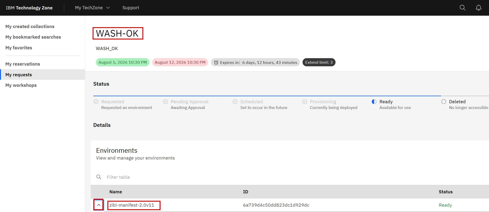
- The expanded Output list contains key information about machines in the environment. The number of systems may vary depending on the bootcamp version, but the general principle remains the same. Machine names include a random suffix, which can be ignored throughout the lab environment.
Some machines and services are accessible directly from the Internet. In those cases, use the public IP addresses listed in the machine descriptions.
Record the public IP addresses of the raptor, cm, coll1, and ceratops machines, as you will access these systems directly from your workstation throughout the bootcamp.
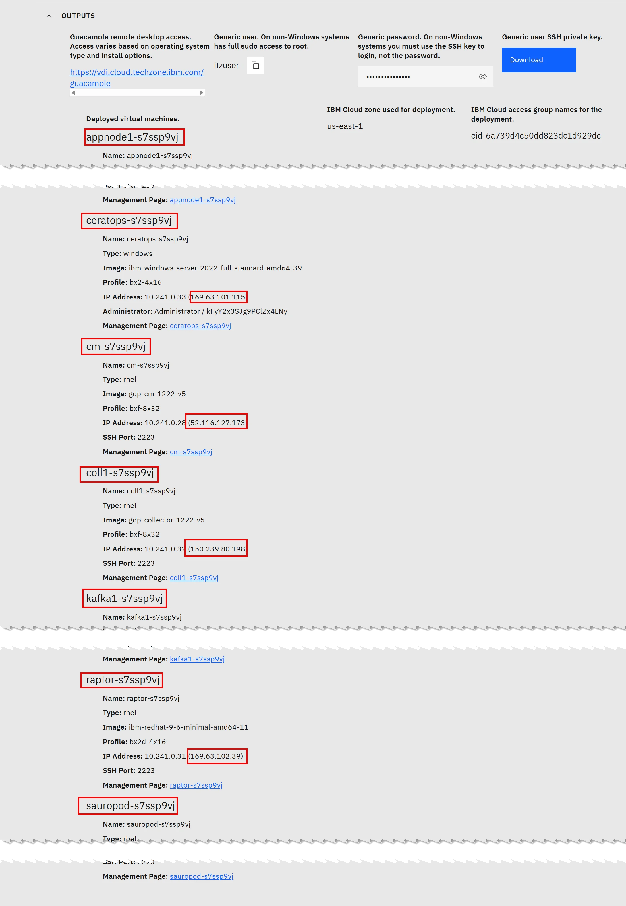
- The cm, coll1, appnode1, appnode2, and kafka1 systems are Guardium appliances. Administrative access to these appliances is performed by connecting to them via SSH from the raptor machine. The appliances use the standard SSH port 22.
In addition, the cm and coll1 systems provide access to the Guardium UI, which is available over HTTPS on port 8443. You will access this interface using your local web browser.
The sauropod machine is accessible from raptor through SSH on port 2223.
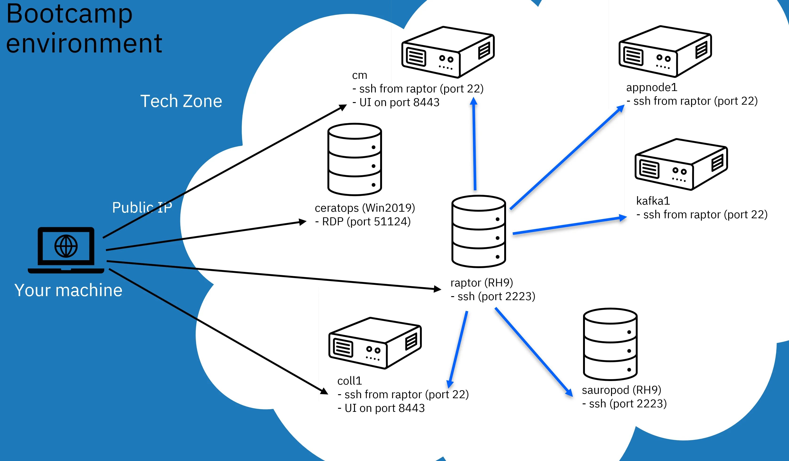
{kind=link}
{kind=link}
{kind=link}
Access to machines
- To connect to raptor, use an SSH client on your workstation. On Windows, MobaXterm or the standard PuTTY client are recommended. On macOS, use iTerm or connect directly from the command line using the built-in SSH client. The default password for the environment services is provided in the TechZone environment description. Use this password to sign in to the root account. raptor can be accessed using non-standard SSH port number 2223.
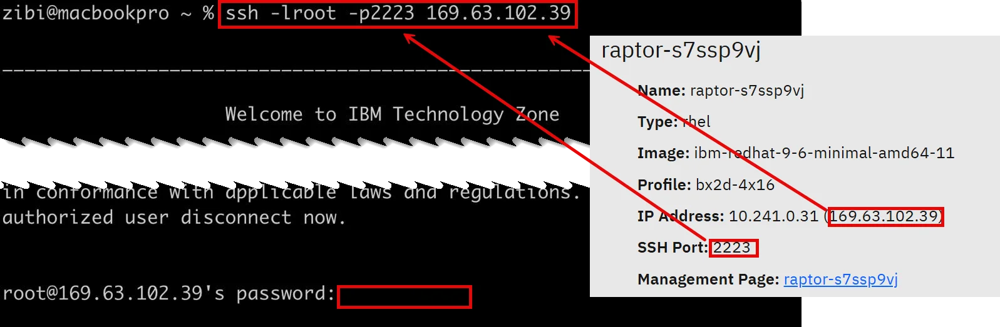
ssh -lroot -p2223 <raptor_public_ip> - To sign in to the cli account on a Guardium appliance, connect via SSH from your raptor session. The password for the cli account is different from the password used for the other environment services and can also be found in the TechZone environment description.
ssh -lcli -p22 cm|coll1|kafka1|appnode1|appnode2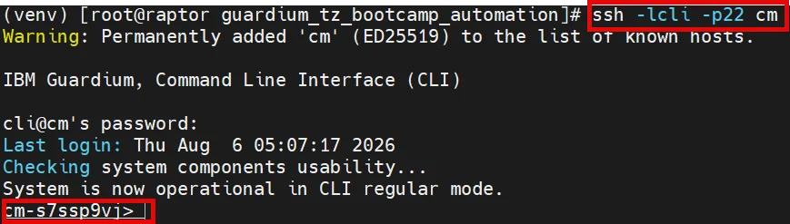
- To log in to the sauropod machine, you do not need to provide credentials, as the root accounts on raptor and sauropod are configured to use SSH key-based authentication.
ssh sauropod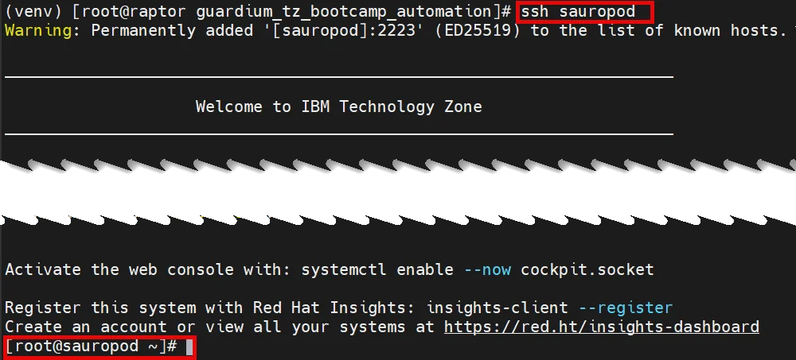
- For security reasons, RDP access to the ceratops (Windows) machine is not exposed to the Internet. To temporarily access this machine, enable a tunnel on raptor using the following command.
systemctl start socat-RDP - To connect to the ceratops Windows machine, use an RDP client on your workstation and specify the raptor public IP address on port 8443. This will forward the connection to the ceratops machine. Sign in using the demo user account and the default environment services password.
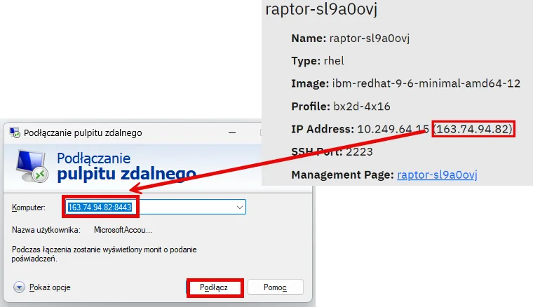
- Ensure that you sign in as .\demo using the default environment services password.
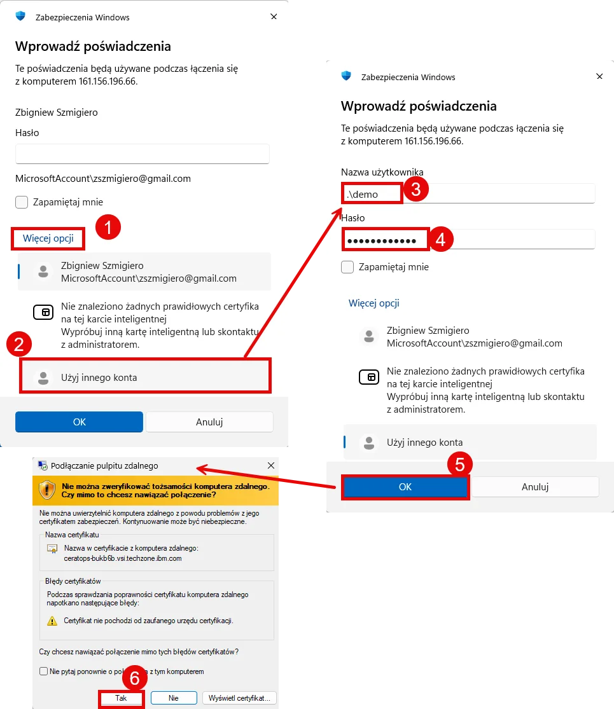
- Close RDP session and stop tunnel. You will start it if needed.
systemctl stop socat-RDP - For macOS, the recommended way to connect to the ceratops machine is to use the Windows App available from the App Store. Add a new machine by creating a new Configure PC, then enter the public IP address of the raptor machine and port 8443. Sign in using the demo user account and the default environment services password.
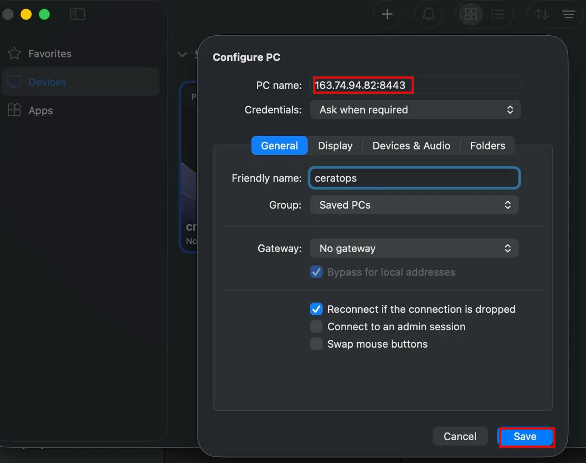
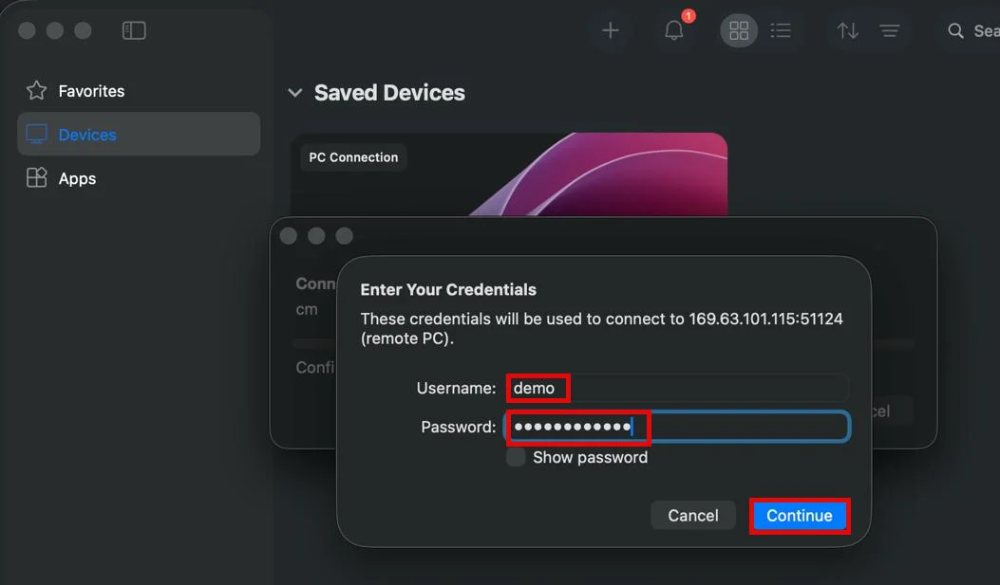
- The Central Manager and collector GUIs are accessible from a web browser on your workstation. Connect using HTTPS to the appliance's public IP address on port 8443. Do not log into UI yet, only check connectivity and save access page in the Bookmarks to simplify connection later.
https://<public_ip_cm|public_ip_coll1>:8443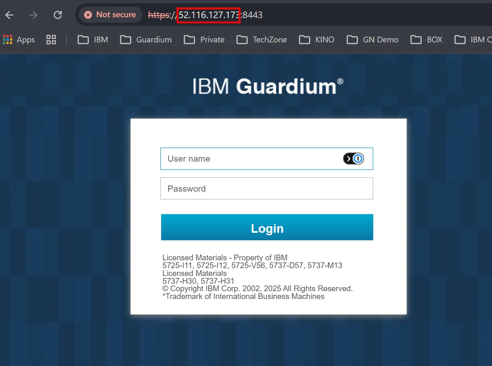
{kind=link}
{kind=link}
{kind=link}
{kind=link}
{kind=link}
{kind=link}
{kind=link}
{kind=link}
Appendix
Dependencies:
Resources:
Instructor notes:
In case of on-site training passwords are provided by instructor
In case of TZ automation, check the password file located there